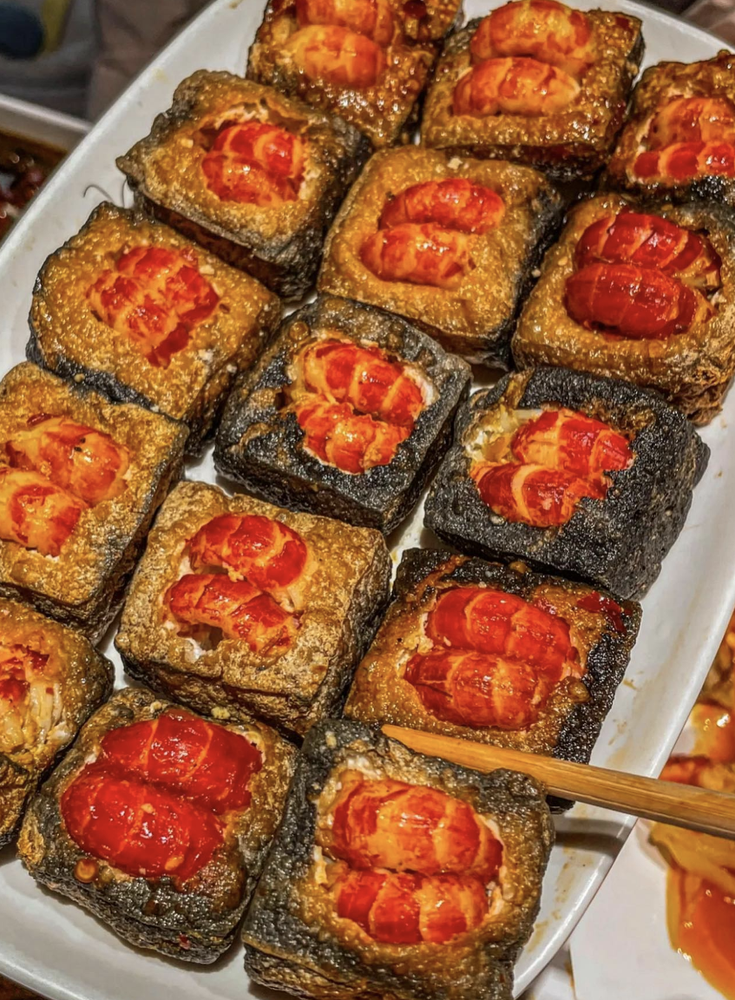

🇭🇰 Hong Kong
Stinky tofu is usually deep-fried and served with hoisin sauce or chili sauce in Hong Kong, which serve to neutralise much of the aroma.

🇹🇼 Taiwan
In Taiwan, stinky tofu is commonly found at stalls in night markets. Taiwanese stinky tofu is cooked with many methods including frying, steaming, cooking in soup, and barbecuing, but is most commonly found in its fried form.

🇨🇳 China
Changsha, Hunan
Different from other forms of tofu, Changsha-style has black crackling. It is made from brine composed of winter bamboo shoot, koji, and shiitake mushrooms. After the surface grows white hair-like filaments, and once it turns grey, the stinky tofu is ready to be fried.

Nanjing, Jiangsu
There is one famous kind of stinky tofu in Nanjing, called "Gaochun stinky tofu". It has different kinds of brine than Changsha style stinky tofu. The brine needs to be made of rotten pickles and its stinky smell will be very natural. Similar to Changsha-style stinky tofu, it also has black crackling.
Sichuan
In Sichuan, stinky tofu is often flavored with mala, a spicy and numbing seasoning made from chilli and Sichuan peppercorns. Sichuan-style stinky tofu does not need to be deep fried in the oil, so it does not have black cracklings. It needs to be stirred fried and boiled with different kinds of spices.